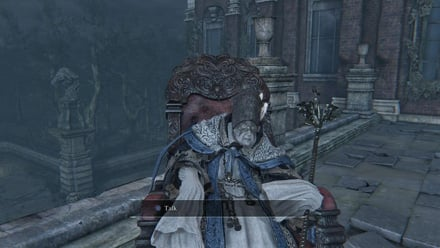

Provost Willem |
|
|---|---|
|  | |
| General Info | |
| Location | Drops |
| Byrgenwerth | 2545 Blood Echoes Eye Rune |
Provost Willem is a non-player character in Bloodborne.
Provost Willem is the head of Byrgenwerth, an academic institute from which the Healing Church originated. He and others scholars discovered a holy medium deep within the tomb of the gods. Willem's aim is to advance the evolution of humankind and achieve higher planes of thought. Despite Willem's central role in the foundation of the Healing Church and particularly the Choir, their paths ultimately diverged and Byrgenwerth was abandoned by all but a few loyal scholars. Now, at the end of his days and barely even able to speak, he can only sit in his favorite chair and await the arrival of one who can unlock the lake's secret.
Provost Willem Information
- "Talk" to him to gain 2 Insight.
- You cannot speak with Provost Willem, he simply points to the lake.
- Drops 2545 Blood Echoes and Eye Rune if killed, or a Madman's Knowledge if you already have the Rune.
Location
- This character can be found at Byrgenwerth College, in a rocking chair at the Lunarium.
Dialogue
- Provost Willem seems to be incapable of speech by the time the player meets him, only pointing the way towards Rom, the Vacuous Spider, and sighing if the player attempts to talk to him.
Upon examining the skull in the Grand Cathedral:
Laurence: “Master Willem, I've come to bid you farewell.”
Master Willem: “Oh, I know, I know. You think now, to betray me.”
Laurence:“No, but you will never listen. I tell you, I will not forget our adage.”
Master Willem: “...We are born of the blood, made men by the blood, undone by the blood. Our eyes are yet to open..."
Master Willem & Laurence: "Fear the old blood."
Laurence: “I must take my leave.”
Master Willem: “By the gods, fear it, Laurence."
Lore
- Master Willem's most important teaching is the adage "Fear the Old Blood". He encourages all the scholars of his college to seek enlightenment and ascension through other methods except using the Old Blood. Laurence wanted to use The Old Blood, which he believed to be key to mankind's ascension. Master Willem felt betrayed since Laurence didn't follow the "Fear the Old Blood" adage. Laurence later founded the Healing Church and made blood ministration/blood healing the cornerstone of the church.
- According to the Graveguard Set, Provost Willem kept two loyal servants at Bygenwerth. One of them is Dores, who became the graveguard of the forest. The other servant became the password gatekeeper that guards the gate in cathedral ward which leads to the forbidden forest.
- Master Willem's teachings in the College of Byrgenwerth eventually branched out and inspired the development of many organizations, such as The Healing Church, The Choir and The School of Mensis. From the description of the Blindfold Cap, elite members of the healing church, the choir, payed homage to Master Willem's teachings by wearing this cap. According to the Student Set, the healing church borrows heavily its design.
Other Notes:
- At this moment, this NPC does not seem to play any significant role beyond dropping Blood Echoes and the Eye Rune if killed.
- When attacked he bleeds "shimmering blood", a blood type also found in to Rom, The Vacuous Spider.
- He has stalks growing out of the flesh on his back. The growths and the flesh can be mistaken for candles and molten wax.
- The growths have a luminous, plantlike quality and they may be a variant of the plants growing out of Rom's back.
- If the Beast Roar is used within distance of him he will jerk and turn towards where it was used (Tested once)
- If he is talked to after the above is done he will no longer point towards Rom, The Vacuous Spider.
- The growths that appear on his back are similar to that of cordyceps fungi, a type of fungus that can affect the brain of its host insects.
- Also these growths are similar to - and may be a primitive form of - what Ebrietas, Daughter of the Cosmos grows on her head.
- If you kill him, he seems to be aggressively cursing someone or something, without saying a word, of course.
Gallery
{kind=link}
{kind=link}
{kind=link}
 Anonymous
Anonymous
- Anonymous
My headcannon: This Master Willem isn't the real Master Willem but the real one is in fact Rom. First of all, he dies like an "ethereal" being, unlike most other normal humans who have the same death aftereffect as you or their body just stays there (excluding the shadows of yharnam of course). This death aftereffect is also present when Queen Yharnam is killed outside Mergo's Wetnurse bossfight, also not the real one. Another piece of evidence is that his blood is similar to Rom's and he also have these weird growths like her. Lastly, the Lunarium key description says:"In his final years, Master Willem was fond of the lookout(...) In the end, it is said, he left his secret with the lake." "In his final years" makes it sound like he is no longer with is, and the fact that he "left his secret with the lake" may mean that he became the secret of the lake, Rom. Although if he is Rom, and Rom made the illusion of him, them why would he (she?) lead you to kill him/her? This is the only thing I can't understand. Rom is however passive at first, and she is vaccouous (meaning dumb I think), so she may have head no knowledge of your intentions.
tl dr: Master Willem may be Rom 'cause he dies weird, has her blood and growths and because a key may hint to it.
- Anonymous
Is that so? It would be really cool! Could you point out why?
- Anonymous
I don't know if this has been said before, but Willem seems to be a reference to Professor Hodgeson from Serial Experiments Lain
- Anonymous
Such a shame he’s been reduced to a sign post. It would have been nice if he were an NPC who can be spoken too on various subjects and gives a traditional FromSoft open for interpretation reply.
Example, say you were to ask him about the “Old Blood” and he replies, “Man, beast or god, the blood makes us what we are...try and force nature’s hand will only lead to her ornery wraith...the blood is old, we are young...our eyes have yet to open...fear the old blood!”
Just something like that and more. Granted the story is primarily focused on Laurence but honestly, I find Master William much more interesting and would love to know more on his actions and history.
- Anonymous
"Byrgenwerth... Byrgenwerth... Blasphemous murderers... Blood-crazed fiends..." He's a genocidal maniac like all the other "Scholars" of Byrgenwerth. I kill him every playthrough, as payback for the people of the hamlet and the poor wizened child.
- Anonymous
Ok he has the cordyceps thing... So all this nightmare is the one from Joel, or Ellie? I am lost in the lore...
- Anonymous
Ngl, felt kinda bad killing him. Kinda like Micolash, he did achieve great things, and was a genius, spending their entire lives working to achieve this knowledge, all for it to shatter their minds, and have some random dude come up and kill them suddenly.
- Anonymous
A provost is the vice president of a college. So who is the actual president of Byrgenwerth? Rom, maybe? Everyone seems to treat Willem as the head of the college, but that can only happen when the actual president is gone.
- Anonymous
On my first run: "Finally, I reached Byrgenwerth, now hopefully meeting and talking to this guy will explain wtf is going on here" Master Williem: grunts and points at water
- Anonymous
I kind of get why Laurence left..."Master, don't you think we have enough eyeballs, the whole place is full of them." Wilhelm "BRING MORE EYEBALLS!!!!" Laurence".......Im out."
- Anonymous
In older versions of the game, Charged attacking Willem’s back with the Ludwig Holy Blade will literally get him to T-Pose.
Does anyone else find it a bit odd Willem, the head of Byrgenwerth institution, drops Madman's Knowledge opposed to Great One's Wisdom?
- Anonymous
If you hurt him but don't kill him, or say, throw a pebble at him, it sounds like he's chuckling.
- Anonymous
Honest truth: I think Willem should have been a boss fight. Imagine what sweet tricks that chair can do.
- Anonymous
The growths on his back look more like tube worms or coral to me. These are found on Ebrietas, but also on the villagers in the Fishing Hamlet. The Fishing Hamlet and Byrgenwerth have a deep connection as suggested by the Befuddled Villager. The two locations have numerous other visual similarities, especially the Amygdala-like statues, and the presence of large bodies of water.
My personal theory is that when Byrgenwerth collected the eyes of the villagers, they incorporated them into one of their scholars, and they became Rom. Imagery of spiders in the game might symbolize the scholars that raided the Fishing Hamlet, and their webs figuratively represent the "net" they used to capture the locals (like a "dream catcher"). The Nightmare Apostles almost seem like a base-form of the Romlings, some of which even surround a giant Apostle much like in the Rom boss fight. By granting them the eyes of the Fishing Hamlet, these select few scholars became Rom and the Romlings. (Most assume the Romlings are Rom's children, but as the game implies, Great Ones cannot have children, so I think of them more as familiars of Rom, much like the Celestial Mobs in the Celestial Emissary boss fight. Unless people around Yharnam were also popping out spider-babies at one point...)
- Anonymous
- Anonymous
I fell down the lore rabbit hole when I was looking at the closeup picture of the "fungus" growing from his neck. And recognized the plant which adorns the top of his staff. After doing the research i discovered why, as snow berry bushes grew all over the place where i grew up. Interestingly enough these berries are white, have white seeds and were used for treating wounds, and menstruation (bleeding issues).
Then i got to thinking further, Wilhelm is white skinned, the berries are white skinned, rom is white, amygdallas are white,Kos and the Oprhan are white, the pthumerians are also depicted with white skin, it seems to me that the prevalence of the color, is possibly pointing to a connection between wilhelm/byrgenwerth and the ancient pthumerians that served the old ones. Byrgenwerth is built over the top of the part of the chalice dungeons as we know.
I am unsure of exact conclusions as these things go with from games, but, i have to wonder if these correlations in color, as well as with other indicators like the snow berry like end of wilhelms staff if wilhelm/byrgenwerth either stumbled on knowledge that actually was leading to the true wisdom of the old ones, or if perhaps wilhelm himself is/was a descendant of them.
We even know that the vilebloods are white skinned, and they stoled there blood. Perhaps the blood they stole was the "true", un tainted old blood, hence why they are hated. just some thoughts.
- Anonymous
So, in the end, the insight drove him so crazy he couldn't even communicate with normal human beings anymore. I wonder if he has some form of telepathy, since he seems to be half-evolved into an Old One himself.
It's funny how, good, bad, helpful, dastardly, rich, poor, it doesn't matter: if you're an NPC in a Fromsoft game, the end of your storyline is probably going to be tragic, or you're going to die. Or both.
- Anonymous
People still blame Laurence for the state of Yharnam, but I don't think Willem is any less guilty. Remember, it was Byrgenwerth that originally raided the Fishing Hamlet in search of eyes, and their actions might be the reason behind the death of Kos. Using human subjects in horrid experiments involving dangerous mediums and harvesting their eyeballs doesn't really scream humane. The curiosity nurtured in Byrgenwerth is essentially what spurred Laurence's obsession with blood, reducing the city to its deteriorated state. Like Gehrman, Willem remains in suspended animation, positively drowning in self-pity.
- Anonymous
- Anonymous
- Anonymous
- Anonymous
2,500 blood echoes and the Caryll Rune titled Eye > More items from fallen enemies. This is the upgraded version of the original Eye.
- Anonymous
"Fear" can also be used to mean 'respect.' He's not telling Laurence to fear some random blood, but to be respectful of it.
- Anonymous
Does he say anything after ROM? Like mp3 or stop all the downloaden?
- Anonymous
Someone else posted about this, but I'm re-posting because nobody seems to be giving it much thought. What is going on with Willem's back? Look at the back of his neck; it looks like there are mushrooms sprouting out of him. Why? What sort of physical change could he be undergoing to cause him to be so pale and nasty? Maybe he's devolving into a slime creature like the rest of the people in the Lecture Building? Whatever it is, something is clearly very wrong with him. He is not an ordinary old man nor a beast.
- Anonymous
- Anonymous
I usually don't attack non-hostile npcs, but maybe I should make an exception...
- Anonymous
Hit his back with a sword and he stands up but is in his chair. His staff flies next to him if one want to scan him better its useful
- Anonymous
Has the same Voice as Micolash in the cutscene after Vicot Amelia. He looks like he's blind. Micolash says "Grant us eyes". Coincidence? :o
- Anonymous
The Beast skull of the church... Could it be... the rest of Laurence ?! Think about it : - First of all, Vicar Amelia said clearly "seek the old blood"... strangely the opposite of what Willem talked about in the flashback... flashback that we have by touching the skull ! And then, what happen ? Ka-bloo-hee ! She became a beast ! Coincidence ? mechanic of Gameplay ? Not sure... - Second point, Willem suspected that Laurence will betray him : he who, I must say it to make my point, made a connection with the old ones... He who was respected by all the Healing Church... and most important part : he who just snapped any form of communications with the Old Ones ! Why ? We don't know... but whatever it was, he never wanted to get F*kin' closer of them, or even involved with them anymore... Besides : just look at him ! I think he paid a really hard and heavy price for his participation in the project of "making contact"... I even think his eyes are no more. And by this, I don't mean that he's blind : I mean that, at some point, his eyes have completely burned or even blew up ! All that from what he saw within the Old Ones... bloody hell ! After that, even I would fear the old blood ! (O m O" ) - Third and last, [ maybe I'm a little crazy with this idea, but... give me a chance. ] Are these guys, these "church doctors" still, um... "human" ? I mean, I could understand why the villagers would hunt us : because they're driven crazy by the plague of lycanthropia ; because of blood or even because we're an outsider, but... why them ? We work on the same side ! We hunt beasts too ! We are lone wolves indeed, but we have got the same tactics : beat the s* out of the monsters ! So why ? And here's my completely crazy idea. Don't throw me heavy rocks on the face, please... ... ... unless they were driven crazy by insight ( because : beasthood turned us into furry ; insight seams to slowly turn people slendermen ) and kill everything without distinction... I would say that, at some point, a part of them was used / or were maybe conscient to hunt anyone... for their blood. And so, my conclusion about this possible lore : I think that a part of the Church was corrupted by the lust for blood, or power, or wisdom... like every men in the old city ! Which is maybe why there's such a strange relic in the church : the skull of the one, Laurence, who embraced the blood, and became a beast ( maybe was he the first one of the church ? Even before Ludwig ? ). This could explain a lot... in the end, there is no better words... man is a wolf to man. And you ? What do you think about it ?
- Anonymous
Just mentioning it since no one else seems to have, but he has a fungus-like growth on his back with glowing stalks.
- Anonymous
- Anonymous
After killing him for the eye rune, I noticed that I could still talk to him (there was no body there so I was confused and attempted it) and there was some extra dialogue of "ah- ah." Or something extremely similar to that. It's very interesting that he was still able to communicate beyond death.
- Anonymous
So I am on my first playthrough and I fell off before talking to him because of yurie when I went back the rune was there... is he gone forever?? (until ng+)
- Anonymous
I really don't know what this guy is telling me to do, Do I just jump of the building to where he pointing at?
tomb mold description - Mould that grows from rotten flesh and blood inside the old labyrinth. Matures to bear giant spores." and since he was the pioneer more or less i speculate that he has tomb mold growing from the back of his neck... lol be funny if he turned into a chalice dungeon or material idk just throwing random ideas to what that mold would end up doing to him in expansions maybe if left alive dlc will allow him to be harvested idk just shooting some ideas.
- Anonymous
..A lot of posts about Willem and his growths, and I'd like to remind people that regular humans in this world follow the same rules as we do: They grow old and die. This fact, along with the various references to Willem somehow being dead or gone more or less confirms that he's no longer human - At least not entirely human. There's no way a regular person would ever grow as old as him, and humans don't bleed white. Now, his blood is similar to that of the doll, but it's -NOT- the same as the weird babies and Celestials. If you look closely you'll see that his blood is a bright silvery color, while theirs is actually a darker greyish green, as though it's somehow corrupted or dirty. That the growths on his back are similar to those on the face of Ebrietas is also -NOT- true. His growths are florescent and spire-like, indeed similar to some forms of fungi. The growths on Ebrietas are not florecent, far larger and clearly tube-like and hollow. Do I know what's going on with him? Not really, other than the fact that it obviously somehow relates to Rom, and that Master Willem himself is likely on the verge of being entirely mindless but somehow undying. I personally believe that he has transcended humanity but possibly at the cost of his mind. If I had to come up with a theory, I'd say that the Rom is titled 'Vacuous' because (as one note states) he will not share the knowledge of what happened in the last days of Byrgenwerth. I think the Willem left his knowledge with with Rom, or somehow at least sacrificed his own mind to seal Yahar'Gul. A note states that he 'Left his secrets with the lake' but I don't think Rom is what that's referring to, seeing as so many others are aware of Rom and the Great Ones.
- Anonymous
- Anonymous
Did anyone else feel kind of bad after killing him for the eye rune?
- Anonymous
How is it that he has a rune on him, has he not been in byrgenwerth this whole time
- Anonymous
Miyazaki confirms this in his interview in the Bloodborne Future Press guide. He goes further adding that his skull "served as the start of the Healing Church itself..." Should've listened to Willem, Laurence!
- Anonymous
Did anyone ever let him live until Rom is defeated and then went back to see what's up with him? I have the strange feeling that he is Rom but I can't quite wrap my head around this theory.
One thing to note is that in the cutscene with him and Laurence, he never says anything like "our eyes our yet to open" in Japanese.
3
+10
-1